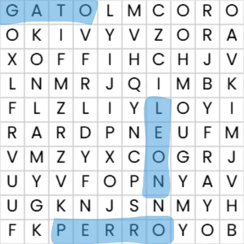
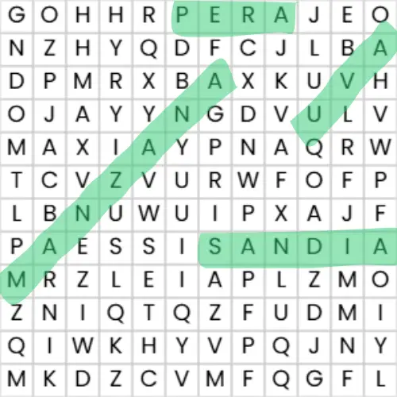
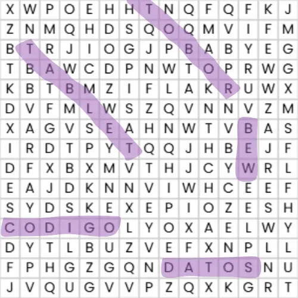

Crea sopas de letras personalizadas para juegos, actividades educativas o diversión.
El generador de sopas de letras es una herramienta interactiva que permite crear juegos de palabras personalizados de forma rápida y sencilla. Es ideal para actividades educativas, entretenimiento, aprendizaje de vocabulario o dinámicas en clase. Puedes definir tus propias palabras, ajustar el tamaño de la cuadrícula y generar automáticamente una sopa de letras lista para imprimir o usar digitalmente. No requiere instalación y funciona completamente online, lo que la convierte en una solución práctica tanto para docentes como para estudiantes o padres de familia.
En este video aprenderás a crear sopas de letras paso a paso, desde la selección de palabras hasta la generación final del juego. Se muestran ejemplos reales de uso en entornos educativos, así como recomendaciones para ajustar la dificultad según la edad o nivel del usuario. También se explica cómo imprimir correctamente la sopa y cómo aprovecharla en dinámicas de grupo o actividades individuales.
| Sopa 1 | Sopa 2 | Sopa 3 |
|---|---|---|
| Tema Animales |
Tema Frutas |
Tema Tecnología |
| Tamaño 10x10 |
Tamaño 12x12 |
Tamaño 15x15 |
| Nivel Fácil |
Nivel Medio |
Nivel Difícil |
| Palabras GATO, PERRO, LEON |
Palabras MANZANA, PERA, SANDIA, UVA |
Palabras CODIGO, DATOS, ROBOT, TABLET, WEB |
|
 |
 |
 |